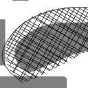
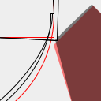
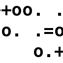
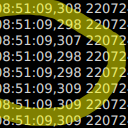

Komponenten
Software-Komponenten
Schraffuren für java.awt.Graphics2D
12.03.2023

Ich wollte eine Methode schaffen, unterschiedlichste Schraffuren in beliebigen Shapes zu erzeugen. diese Möglichkeit fehlt - zumindest in java.awt.Graphics2D - in Java noch.
Entwurfsmodus für java.awt.Graphics2D
04.03.2023

Es ist jetzt bereits einige Zeit vergangen seitdem ich über Versuche berichtet habe, den "Servietten-Look" wie bei SketchViz oder Rough.js auch in Java-Programmen zu erreichen. Letztes Mal berichtete ich über komplexe Strokes, mit denen sich so etwas realisieren ließe.
Drunken Bishop in Java
28.01.2023

Ich habe neulich wieder einmal Lust auf eine kleine Fingerübung gehabt und deshalb ein Verfahren in Java implementiert, das ich ursprünglich als Möglichkeit kennenlernte, zwei Schlüssel beim Versuch des Aufbaus einer Verbindung mittels SSH zu vergleichen...
Drehen durch Scheren
28.01.2023
Ich bin durch Stöbern in meiner sozialen Blase auf ein altes Verfahren aufmerksam geworden, das ich dennoch bisher nicht kannte (sollte mein alter Bildverarbeitungs-Professor sich jetzt zornroten Kopfes fragen, wieso er damals dann überhaupt vor uns gestanden hat, bitte ich inständig um Vergebung für meine Unaufmerksamkeit!)
Tests mit Zeiten und Uhren in Java
11.01.2023

Ich habe vor nicht allzu langer Zeit hier bereits darauf hingewiesen, dass vieles, das aktuell in riesigen Frameworks vermeintlich erfunden wurde und wird bereits (seit langem) Teil von Java SE ist.
Dependency Bloat in Java
17.12.2022

Ich wurde durch einen Artikel neulich im Internet angestupst, Gedanken zu einem Thema aufzuschreiben, die schon länger in meiner hinteren klinken Gehirnwindung gären: Es geht dabei um Dependency Bloat vs. Nutzen vorhandener Infrastruktur.
Archunit - für alle, die es noch nicht kennen...
03.12.2022

Ich trage mich schon seit einer Weile mit dem Gedanken, einer größeren Leserschaft ein Werkzeug nahezubringen über das ich in einem der Projekte in meinem $dayjob gestolpert bin. Dabei handelt es sich um ein Testframework namens ArchUnit. Dieses Framework erlaubt es, diverse Metriken einer Codebasis zu testen, die sich grob in die Bereiche Architektur, Coding Style oder Model Check einordnen lassen.
EpochDateFormat.java
31.10.2022

Nachdem ich neulich festgestellt habe - voller Verwunderung festgestellt - dass es keine Möglichkeit gibt, mittels der in Java zur Verfügung stehenden DateFormat-Implementierungen Unix-Epochs zu parsen und zu erzeugen, musste ich selbst zur Tastatur greifen...
"Funktionale" Programmierung in dWb+
31.10.2022
Nach meinem letzten Artikel zum Thema dWb+ ist bereits einige Zeit vergangen. Ich habe lange überlegt, wie ich eine Anwendung schreiben könnte, die mir gestattet, mit einem System herumzuspielen, das ich aus dem Buch von Prof.Strogatz kannte.
Tail -f ist eine schlechte Idee
23.10.2022

In meinem $dayjob musste ich vor einigen Monaten einmal einen Bug untersuchen. Das hat eine (für mich) überraschenende Tatsache ans Licht gebracht und mich wieder daran erinnert, was ich zum Thema Forensik gelernt habe: Man braucht Zeit und Ruhe, um das Problem und die hinterlassenen Zeichen gründlich zu untersuchen und so zum Kern des Problems vorzudringen.
Ältere Artikel
Hier geht es zum Archiv der Artikel, die vor dem 15.10.2022 verfasst wurden:
- Neues Interface für Plugins
- BPMN-Modeler in Docker
- ...


Vor 5 Jahren hier im Blog
-
Swing Inspector
01.06.2019
Ich trug mich schon länger mit dem Gedanken, ein Werkzeug zu schaffen, das den diversen Entwickler-Tools in Browsern gleichen sollte: Es sollte die Selektion von GUI-Komponenten mittels Maus ermöglichen und die Ergebnisse der Manipulation ausgewählter Komponenten sollte live - während die eigentliche Applikation normal arbeitet - möglich sein.
Weiterlesen...
Tags
Android Basteln C und C++ Chaos Datenbanken Docker dWb+ ESP Wifi Garten Geo Git(lab|hub) Go GUI Gui Hardware Java Jupyter Komponenten Links Linux Markdown Markup Music Numerik PKI-X.509-CA Python QBrowser Rants Raspi Revisited Security Software-Test sQLshell TeleGrafana Verschiedenes Video Virtualisierung Windows Upcoming...
Manche nennen es Blog, manche Web-Seite - ich schreibe hier hin und wieder über meine Erlebnisse, Rückschläge und Erleuchtungen bei meinen Hobbies.
Wer daran teilhaben und eventuell sogar davon profitieren möchte, muß damit leben, daß ich hin und wieder kleine Ausflüge in Bereiche mache, die nichts mit IT, Administration oder Softwareentwicklung zu tun haben.
Ich wünsche allen Lesern viel Spaß und hin und wieder einen kleinen AHA!-Effekt...
PS: Meine öffentlichen GitHub-Repositories findet man hier - meine öffentlichen GitLab-Repositories finden sich dagegen hier.